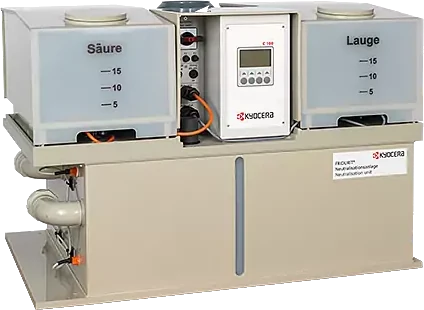

pH Neutralization of Wastewater
The KYOCERA neutralization unit solves the problem of acidic and alkaline liquid waste simply and quickly by neutralization. The control unit measures the pH of the waste and brings it within the set range by dosing reaction chemicals (HCl and NaOH). After neutralization, the waste is discharged into the municipal sewer. The whole process runs automatically; the user only needs to monitor the wear of the pH electrode and replace it when the unit raises an alarm, and to check the level of the reaction chemicals and top them up as needed.
The length of a neutralization cycle depends on the pH of the waste and the concentration of the chemicals, and can range from a few minutes to 90 minutes. The smallest unit has a capacity of 100 litres; larger volumes of waste can be handled by installing a collection tank upstream of the unit, so that larger quantities are collected according to the user’s needs and then neutralized in cycles, with the unit drawing a set amount of waste each time.
Collection can be done manually, by pouring waste into the collection tank, or by connecting one or more points where waste is generated (usually sinks) to the collection tank through a local drainage network.